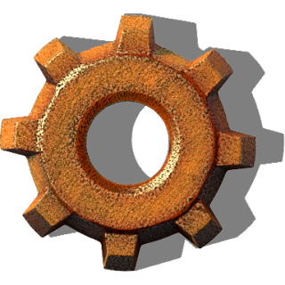

Factorio Seed ViewerTop seeds
| Zone | Type | Radius | Δv | Water | Enemy | Primary | Estimated resources |
|---|---|---|---|---|---|---|---|
| Enter a seed and press Generate. | |||||||

Factorio Seed Viewer| Zone | Type | Radius | Δv | Water | Enemy | Primary | Estimated resources |
|---|---|---|---|---|---|---|---|
| Enter a seed and press Generate. | |||||||